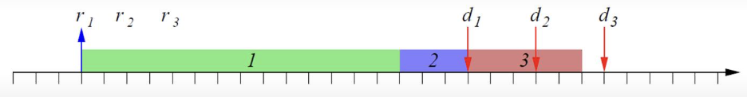

Lab 5 Notes: Real-Time Scheduling
Conventional Scheduling
Major Scheduling Algorithms
Scheduling algorithms explains how different processes share the CPU.
It is the strategy used to pick a ready task for execution.
It tells the processor, from the list of processes in the ready queue which one should run next.
The scheduler is what "process_select" does.
-
Preemptive scheduling: The running task can be temporarily suspended to execute another task.
-
Process context switch out of CPU and give CPU to a different process.
-
Round Robin (RR) - able to interrupt the process, take execution away even when process itself is not done.
This gives the illusion that processes can run parallel on single CPU that can make progress on one time.
-
Shortest Job First (SJF) --> Shortest Time-to-Completion First (STCF) (also online)
-
Priority Scheduling - More important process can take execution away from less important process.
-
Non-preemptive scheduling: The running task cannot be suspended
-
All scheduler gets to decide is which process gets to start, and once it starts, that process runs to completion.
-
Analogy: More customers at store checkout line, and each check out line has a server (CPU) that service the customer (processes that is ready to run) that is waiting.
What strategies are there for assigning different customers to different checkoutlines, so either: average waiting time for everybody is reduced, fairness, etc.
The perspective of a store manager, with an overview of all the CPUs and all the waiting processes, and can tell one process (customer) to go to one particular CPU (checkout line) at one particular time.
-
First Come First Served (FCFS)
-
Shortest Job First (SJF)
-
Online scheduler: Get more request for tasks as it is running.
- First Come First Served (FCFS)
- Scheduler does something sensible as new tasks arrive, so these new tasks can be scheduled.
-
Priority Scheduling
-
Offline scheduler: Needs to know all the tasks beforehand then try to come up with a scheduling policy for these tasks.
-
For real-time scheduling, there are reasonable cases where an offline scheduler is needed.
For example, we know that there are 10 tasks that needs to be done, will be useful to come up very carefully what type of schedule should run.
-
For SJF, assume we have a bucket of jobs at time 0, so we need to figure out what order the jobs are in.
-
Heuristic scheduler: came up with policy that is reasonable but no mathematical optimization taking place. No nice formula.
- First Come First Served (FCFS)
-
Not Heuristic
-
Shortest Job First (SJF) Scheduling

Scheduling Algorithm Categories
-
Preemptive or Non-preemptive
-
Static or Dynamic
-
Are scheduling decisions based on parameters that change with time? (yes --> dynamic)
-
Fixed-priority vs. dynamic-priority
-
Priority Scheduling can be both static (if priorities doesn't change) or dynamic (if priorities changes, for example, passing of time).
-
Online or Offline
-
Are the decisions made a priori with knowledge of task activations (online),
or are they taken at run time based on the set of active tasks (offline).
-
Optimal or Heuristic
-
Can you prove that the algoritm is optimal (write down some quantity that we want to optimize) in terms of a criteria or not? (no --> heuristic)
-
For example, for average response time, there is no scheduler that is non-preemptive that optimize better than STF, in minimizing the average response time.
- First Come First Serve (FCFS) Scheduling
- Shortest Job First (SJF) Scheduling
- Priority Scheduling
- Round Robin Scheduling (RR)
Metric Average Response Time
- Task: Each thing a process does --> fixed amount of computation time (green) required on this particular processor.
- If I give this particular process access to CPU, it will take this much time (green) to finish it.
- Computation Time: Ci = fi - si
-
Request Time: ri marks whenever we receive a new task.
- Response Time: Ri = fi - ri --> time it takes from the request to come in to the job to finish.
-
Average Response Time: summation (1/n) of response time --> expectation of R, to measure quality of a scheduler given a bunch of tasks.
- Better if the average response time is less.
- Deadline: di results from when request is being made.
- Goal: Minimize the average time that a customer (job) waits in the line (ready queue).
First Come First Served (FCFS)
Process these tasks in the order that the tasks are received.
Problem:
One long task can kind of "block" a lot of shorter tasks.
For example, first customer takes a long time at the cash register,
is the first customer to go because it arrives at the cash register before the other customers, maybe just by a little bit.
- Perspective of the customer (specific process/task): super annoying
- Persepective of the system: unpredictable wait time due to response time depends stronly on task arrival time.
- Thus, FCFS scheduling is not sutable for real-time systems.
A better scheduling policy is need!
Shortest Job First (SJF) Scheduling
Look at how much item each customer wants to check out,
let the customer with a smaller number of items check out first even if they arrived at the line late. T
his is optimal in terms of average response time, minimizing average response time.
- Look at the queue (number of tasks avaliable to us for scheduling).
- Look at computation time for each one.
- Pick the one with the smallest computation time.
Problem:
SJF is not optimal for real-time in the sense of feasibility.
In real-time scheduling, we really care about whether or not deadlines are met, more than average response time.
With all tasks requested at the same time, r1, r2, r3,
if task 1, being the longest task runs last, it misses it's deadline d1.
If SJF is not used, and task 1, task 2, task 3 runs in this order (FCFS),
all deadlines d1, d2, d3 are met.

SJF can result in deadline not met and both SJF and FCFS can lead to starvation
(starve long processes preventing it from running,
starve short process because first job too long, respectively).
SFJ is optimal with respect to response time, but optimality does not equal feasibility,
meaning deadlines might not be met.
Solutions:
-
Priority queues where short jobs and long jobs are treated differently.
-
Analogy: express check out lines for short jobs, or when a flight is taking off,
let faster passenger, those without luggage for example, go to express checkout line,
so fewest people possible misses their flights.
-
In each type of job (different queues), try to do FCFS. Reshuffle FCFS queue which helps with fairness.
-
Priority Scheduling
-
Round Robin Scheduling (RR)
Priority Scheduling
Assign processes a number (priority) that could be related to computational time (shorter computational time, higher priority) or something else.
-
Use computation time as the priority, where shorter computation time at higher priority.
-
Task with highest priority is selected first.
-
Tasks with same priority are scheduled using FCFS.
Problem:
-
Starvation:
-
Low priority tasks (jobs with long computation time, etc.) may experience very long delays due to preemption by higher priority tasks.
-
Common approach to handle starvation: Aging - priority increases with waiting time.
-
Real-time operation systems mostly implements priority scheduling,
because priority scheduling can implement other policies (SJF, FCFS, etc.)
-
If pi is proportional to 1/Ci --> 1/(computation time)
- Use preemptive version of SJF.
-
If pi = const
Round Robin Scheduling (RR)
-
The ready queue is FCFS.
-
However, each task cannot execute more than Q time units (the quantum).
Tasks are chopped up into little bits,
and all ready processes run at decrease speed due to having to having to split time between multiple processes.
-
When Q time units have elapsed, the task is put back into the ready queue (back of the "line").
-
Shortest process finishes first.
-
Longest process doesn't starve.
-
RR always tries to equalize resources among all processes, fairness.

RR Example - no mixing processes --> always green (task 1), purple (task 2), red (task 3)

Advantage of RR over SJF/STCF?
- All processes run all the time (no starvation)
- Shortest jobs complete first
- "Fairly" splits resources
RR Scehduling Properties
-
If there are n tasks in the system
-
Each repeating sequence in the schedule is length nQ.
- In each repeating sequence, a task gets Q units of time
-
Suppose context switch time δ is much less than Q, but Q is also small --> Ri response time is the same for each task, context switch time δ negligible,
each task runs as if it were executing on a virtual processor that is n times slower than the real one. There is an illusion that all these processes are running at the same time. Each process runs at 1/n speed.
-
If Q is very large
-
RR = FCFS --> not much optimization
-
No context switch due to RR triggered timer interrut (task often finish before Q time elapsed --> never gets a context switch).
Note about non real-time scheduling
- Worry about completion time C, fairness, starvation.
- Don't really worry about deadline (real-time scheduling cares mostly about deadline).
Real-Time (RT) Scheduling
Instead of focusing on throughput, waiting time, and starvation, real-time scheduling focuses on meeting deadlines. Each process have additional information on timing constraints, external constraints on Computation
Many computing systems need to respond to events within precise timing constraints.
There is a tight interaction between sensing and actuation, which need predictable timing of operations.
The control theory quantifies the effect of delays or stability.
Real-Time Systems
Computing system that is able to respond to events within precise timing constraints.
- Correct operation depends on properties such as produing correct output, and the time which the output is produced.
- Time between different entities must be synchronized (all participants in the real-time system must work in the same time frame, like the real world).
- For example, 1ms is exactly 1ms, not a fraction of it. Deadlines specify must make sense.
- Systems with multiple tasks with varying criticality levels (really clear which tasks are critical/important).
- Real time is not the same as fast.
Terminologies
-
Hard real-time tasks: Must meet their deadlines --> catastrophic consequences
- For example, low-level (high performance) control such as stability control for rockets, attitude control for airplanes, surgical robots.
- Meeting deadlines --> predictability more important than performance.
- Soft-real-time tasks: Just want things to meet most of the deadlines --> System performance degrades is starting to miss deadlines, but nothing terrible happens.
- For example, reading keyboard input, want to make sure each key responds to about 2ms of being press.
- Otherwise delay in response can ruin user experience). Once in a while a key lags is okay.
- Other examples, displaying a message, update graphics.
- Tasks can be assigned priorities to determine hard real-time systems and soft real-time systems.
-
Job: A unit of work that is scheduled and executed by the system.
-
Task (process): A sequence (possibly infinite) of jobs, which jointly provide some system functions.
-
A job has:
-
Request time ri (arrival time)
-
Start time si
-
Finish time fi
-
Computation/execution time Ci
-
Total amount of CPU access that particular process needs in orfer to finish.
-
Absolute deadline di
-
Often specify with respect to R (Response time), absolute time --> "It needs to arrive/finish within 10 seconds, or some milisecond, etc."
-
The scheduler figures out which tasks to run when,
and hopefully the computation time that the task needs finishes before the deadline.
-
Relative deadline Di = di - ri
-
Defined relative to request/arrival time ri.
-
Task can have a single job, task can have multiple jobs (start and stop at multiple times, randomly arriving, etc.).
-
Periodic task (time driven) vs aperiodic task (event-driven)
-
Feasible schedule (given many tasks, with computation times, arrival times, and deadlines)
-
A set of schedule sigma σ is feasible if all tasks are able to complete with their set constraints, meet all their deadlines.
-
A set of tasks capital gamma Γ is schedulable if a feasible schedule exists (all tasks complete all set of constraint).
Performance vs predictability
Real time has to guarantee time properties (meeting deadlines), while performance minimize average response time.
Processors and systems made for soft real time constraints and performance are difficult to get predictable behavior.
For example, performance optimize CPUs that runs on laptop, desktop, etc., has many features that improve performance but detremental to implementing hard real-time systems.
Source of unpredictability
-
Architecture: cache (temporary buffer to increase memory access times), pipelining,... --> performance feature that makes predictability harder (if cache misses, etc. --> why Cortex M series doesn't have cache or very deep pipeline, but meant for predictable behaviors, such as "this interrupt will be serviced within 12 cycles, always.")
-
Run-time system: scheduling, other tasks, ...
-
Environment: Bursty information flow, extreme conditions, ...
-
Input: no explicit notion of time in more language, ...
Scheduling
A schedule is a particular assignment of tasks (jobs) to the processor. It assigns every point in time to a task.

-
Each integer value for schedule sigma σ correspond to tasks that are actually running.
-
If no task running, sigma σ = 0 --> idle process in an operating system
-
Time slice: chunck where schedule is constant.
-
Context switch: discontinuity (start from idle, jump from task 1, to task 2, to task 1, to task 3, go back idle --> all tasks are done)
General problem
Given a set of tasks capital gamma Γ, a set of processors P, and a set of resources R, find an assignment of P and R that produces a feasible schedule.
-
For low level periodic control, often do knows all tasks Γ ahead of time, but need to make sure that Γ can all be fit into computation budget and meet all the timelines.
Drived Parameters
Many drived parameter depends on deadline, so come up with optimal schedules, minimize or optimize some of these quantities, for real-time systems. Come up with schedule that is both optimal (toptimize drived parameters) and feasible (meet all deadlines).
-
Lateness: Li = fi-di
-
Can be positive (missed deadline), negative (meet deadline), or zero.
-
Tardiness(lateness, Li) Li
-
Can only be from 0 to positive value.
-
How much deadline missed.
-
Computation/execution time Ci = fi - si (assume continuous)
-
Residual computation time: ci(t) --> pick any time t from si to fi, ci is the time from t to finish fi, how much time there are left before process can finish.
-
Slack: Xi(t) = di - ci (t)
-
How much extra space is there from residual computation time to deadline.
-
Response time: Ri = fi - ri
-
Finish time minus the arrival time.
Jitters
Jitter is the time variation for the computation within each period, time variation of a periodic event.
-
Each period, all deadlines are met, but when finish within each period, it is all over the place.
-
For computations such as Fourier analysis or signal processing, normally assume evenly spaced signals, and in those cases, jitter should be minimize in the schedule.
-
Sometimes, minimize jitter instead of maximizing throughout.
-
maxk(fi,k - si,k) - mink(fi,k)
Resource Constraints
Resource constraints that we use locks to protect, share resources, presents some problems in scheduling.
- Resources may be limited or even unavailable
- Shared resources may require mutual exclusion (one process can access resource at a time)
When resource conflict is added to real time scheduling:

-
Purple process is longer --> arrives earlier and have a later deadline.
-
The green process has higher priority (lower number, lower timeline), comes in an preemp (the running purple task temporarily suspended to execute higher priority green task.)
Red section (critical section) is protected by a lock ensures mutual exclusion between these two processes.

-
Even though the green process has a higher priority, it will try to acquire the lock but fails, so execution has to go back to the purple process,
so the purple session can finish running the rest of the critical session.
-
Then green session acquires the lock, get through the critical session, then finish its noncritical session.
-
Green process still meets its deadline, but its slack is a lot lower (difference between residual computation time and deadline).
Faster Processor
Having a faster processor doesn't automatically mean it is easier to meet deadlines.
-
The purple process starts first, the green process comes in with shorter deadline and higher priority, the green process gets to the critical session first and continues running.
-
preemp --> switch out green process, switch in purple process.
-
The purpole process continues running, critical section then non critical section of purple process.
The purple process is now faster (2 times speed, on the line plot, 1/2 as big), but the schedule is no longer feasible.
The green process fails to meet deadline because purple process reach and access the critical section first, causing the green process to wait its turn to enter the critical section.
-
The green process preemp the purple process only for a little bit, before getting into a resource conflict, giving the execution back to the purple process.
-
The critical section of the purple process is big enough to make the green process miss its deadline.
-
Computational system can speed processes up, but the deadlines aren't from the computational system,
and does not scale well, resulting in failing to meet deadline.
Aperiodic Real-Time Scheduling Algorithms.
Earliest Due Date Scheduler (EDD) and Earliest Deadline Scheduler (EDF) both tries to minimize the same metric,
maximum lateness Lmax = max(Li), that looks at all the jobs, and find positive lateness (at least 1 of the jobs has miss its deadlines).
When Lmax <= 0, this means that no tasks misses its deadline.
Shortest Job First (SJF) in real-time scheduling has shorter average wait time, but might miss the deadline of process 1, because its deadline is the earliest but has the lowest priority and runs last.
This schedule has longer average wait time but is feasible --> better schedule than SJF.
Earliest Due Date Scheduler (EDD)
-
Offline, non-preemptive version, similar to SJF, but instead of focusing on response time, focuses on due date.
-
Strategy: select the task with the earliest due date (deadline), and assign it a fixed priority.
-
All tasks arrive at the same time (equal arrival time) --> offline
-
Fixed priority (di is fixed and known)
-
Preemption is not an issue (non-preemptive) because no new process arrive midway, no need to switch in and out.
-
EDD minimizes the maximum lateness Lmax
-
If EDD results in Lmax > 0,
-
Can directly map onto priority scheduler --> lowest number or earliest deadline results in higher priority
Earliest Due Date Scheduler (EDD) Example
There are 5 jobs. The computation time for each job are shown as Ci.
Job 1 (J1) has computation time of Ci = 1, Job 4 (J4) has computation time of Ci = 3, job 5 (J5) has computation time of Ci = 2, etc.
For absolute deadline di, J1 to di = 3, J2 to di = 10, J3 to di = 7, etc.
Earliest Due Date Scheduler (EDD) Example Solution
Maximum lateness Lmax = -1, due to job 4. Lmax = f4 - d4 = 7 - 8 = -1.
However, because Lmax is negative (or less than or equal to 0), no job miss the deadline.
Jackson's Rule
Given a set of n independent tasks, any algorithm that execites the tasks in order of nondecreasing deadlines is optimal with respect to maximum lateness.
-
If Lmax (a set of schedules sigma σ) is maxium lateness of a schedule, then:
-
Maximum lateness Lmax of EDD schedule is <= Maximum lateness Lmax of some other schedule
Schedulability Analysis
How can we check if there is a feasible schedule for a set of tasks capital gamma Γ? --> We can compute Lmax and check if value is less than or equal to 0.
If we sort the tasks using EDD and all tasks arrive simultaneously, then fi = sum of computation time Ci of each task.
Earliest Deadline Scheduler (EDF)
-
The preemptive (running task can be temporary suspended to run another task) version of EDD.
-
Strategy: select the task with the earliest deadline, but tasks can arrive at any time.
-
Tasks may arrive at any time
-
Dynamic priority (pi depends on arrival and absolute deadline di)
-
Preemption (context switch) is necessary for optimality (minimize average wait time, faster respond time) and may also reduce lateness.
-
When new tasks arrive, determine its priority then based on that, determine whether preemption should be done.
-
EDF also minimizes the maxium lateness Lmax, but with preemptive schedulers.
Earliest Deadline Scheduler (EDF) Example
Tasks that arrive with earlier deadlines (blue process) pre-empt (switch out) tasks with later deadlines (green process suspended midway temporarily, then switch back in after blue process finishes).
If EDF has no Preemption
Green process starts (r1). Blue process arrived (r2) but green process continues running until finish because green process can't preempt out of execution.
Blue process starts running after green process finishes, missing its deadline d2.
More Complex Constraints
Precedance Constraints
For example, for control systems, trying to write software for a car, job 1: start engine has to start before job 2: pump gas.
EDF with Precedence Constraints Old
EDF with Precedence Constraints New
-
EDF scheduler looks at deadline and request time. To include precedence constraints, modify parameters of the original tasks to include the precedent task's constraint.
-
J1 -> J2 (Job 1 has to start and finish before Job 2)
-
New request time for J2: r'2 = max(r2, r1 + C1)
-
New deadline for J1: d'1 = min(d1-C2)
-
If the new schedule with r'2 and d'1 is schedulable, original problem is schedulable as well.
Schedulability Analysis
-
New tasks appears
-
Let requestor know if it is possible
-
Schedule if possible
-
Reject otherwise
Periodic Real-Time Scheduling (Repetitive Tasks)
Cycle Scheduling
Rate Monotonic (RM) Scheduling
Using EDF Scheduler for Periodic Task